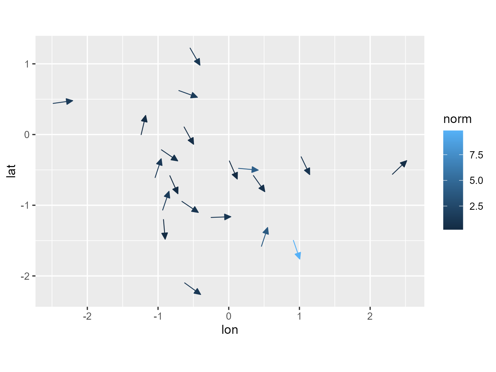
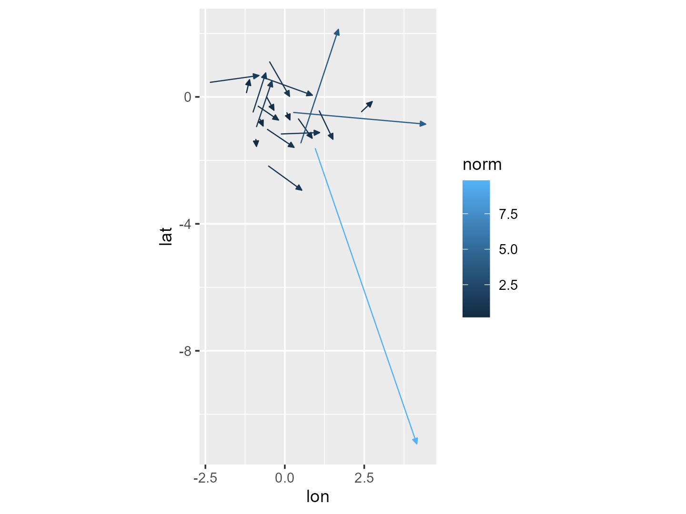
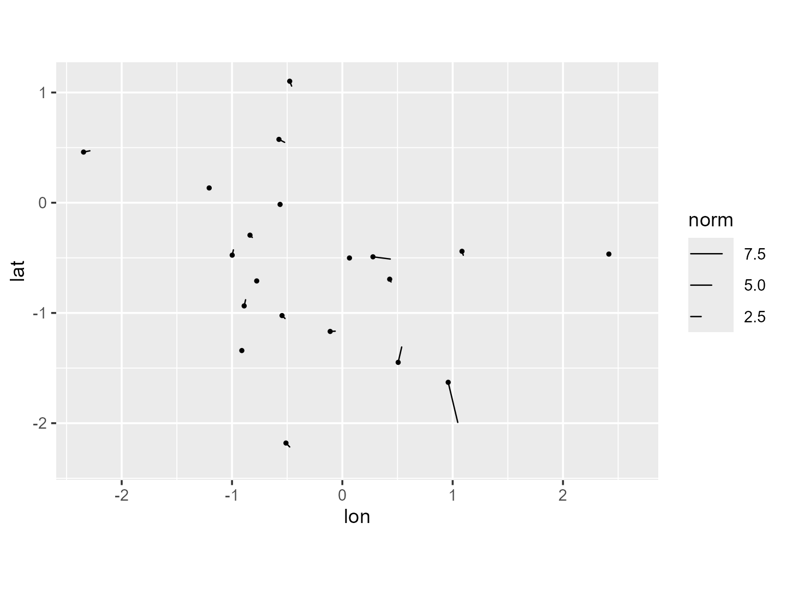
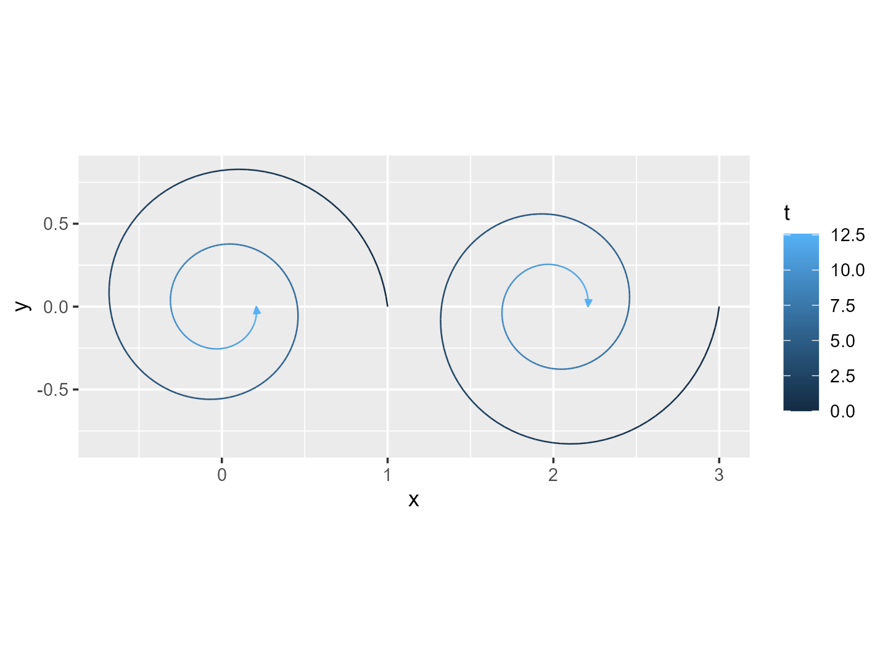

Often you have observed vectors rather than a formula: wind measured
at weather stations, currents at buoys, velocities in an experiment.
Each row of the data is a vector, given by where it is (x,
y) and what it is. This article shows the ways to give that
second part and the layers that draw it.
set.seed(1234)
n <- 20
wind <- data.frame(
lon = rnorm(n),
lat = rnorm(n),
dir = runif(n, -pi / 2, pi / 2), # direction, in radians
spd = rchisq(n, df = 2) # speed
)
wind$fx <- wind$spd * cos(wind$dir)
wind$fy <- wind$spd * sin(wind$dir)Three ways to give a vector
geom_vector() accepts any of these:
-
Components
fxandfy: the change inxand iny. -
End points
xendandyend, as ingeom_segment(). -
Polar form: a direction
angle(radians) orangle_deg(degrees), with the lengthnorm. (distanceis accepted as another name fornorm.)
ggplot(wind) +
geom_vector(aes(x = lon, y = lat, fx = fx, fy = fy)) +
coord_equal()
The same plot from the polar form:
ggplot(wind) +
geom_vector(aes(x = lon, y = lat, angle = dir, norm = spd)) +
coord_equal()
Length and color
By default geom_vector() draws every vector at a common
length, centers it on its point, and shows its size with color. Turn
these off to draw the data as given:
ggplot(wind) +
geom_vector(aes(x = lon, y = lat, fx = fx, fy = fy),
normalize = FALSE, center = FALSE) +
coord_equal()
geom_vector2() shows size with length instead, and marks
each vector’s base with a dot. Lengths are proportional to the norm and
set by scale_length_continuous().
ggplot(wind) +
geom_vector2(aes(x = lon, y = lat, fx = fx, fy = fy)) +
scale_length_continuous(max_range = 0.8) +
coord_equal()
Paths: geom_stream()
geom_stream() draws a path through points in the order
of a time variable t, with an arrow at the end. Use it for
trajectories you already have, such as a tracked animal or a drifting
buoy; group several paths with group.
t <- seq(0, 4 * pi, length.out = 200)
spirals <- rbind(
data.frame(t = t, x = exp(-t / 8) * cos(t), y = exp(-t / 8) * sin(t), id = 1),
data.frame(t = t, x = 2 + exp(-t / 8) * cos(-t), y = exp(-t / 8) * sin(-t), id = 2)
)
ggplot(spirals) +
geom_stream(aes(x, y, t = t, group = id, color = t)) +
coord_equal()
From data to a field
Scattered, noisy vectors can be smoothed into a field with
geom_vector_smooth() and geom_stream_smooth(),
which also show how uncertain the smoothed vectors are. See
vignette("smoothing", package = "ggvfields").